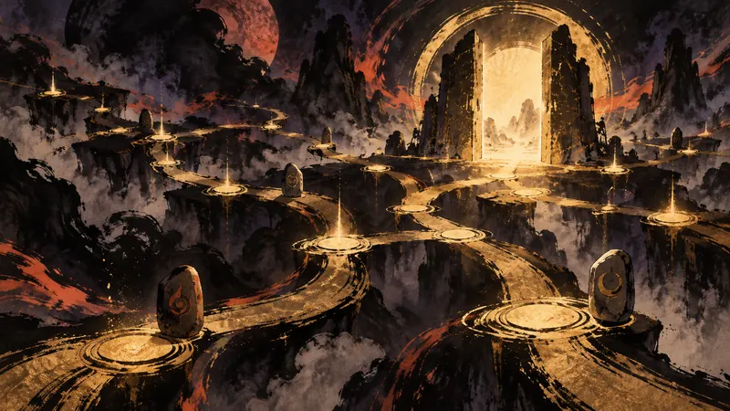

SAKIGARASU | DAWN DISPATCH
MapleStory M Union System Overhaul Lets Players Allocate Ability Points Directly (translated)
Player agency: how policy constrains it, how the industry shapes it, how narrative design realizes it.

The Union overhaul in MapleStory M gives players more control over progression decisions: ability values are no longer earned by filling tiles on the battle map, but by directly allocating points; characters level 200 and above can also freely change jobs, with the system providing loaner equipment suited to the new class based on the level of their existing gear. Nexon is also adding a “Combat Power Guide” that shows which Bosses players can challenge and how they can improve based on their combat power, while expanding the default inventory and storage slots and introducing convenience features such as permanently unlocking the pocket slot and removing Buff Freezer. Limited-time content will follow the update as well: “Super Week” runs from September 24 to October 5, a 10th Anniversary Shop and countdown login event begin on October 1, and from that day through November 11, “Lady Blair's Dream Express” allows players to transfer cosmetic outfits, pets, and mount items within a world.
Source Preview
'메이플스토리M' 유니온 개편, 능력치 직접 배분
Source: 인벤 Inven（韓國，韓語）
Sakigarasu's Take
Progression can be adjusted later, so early decisions no longer dictate the entire playthrough, and control returns to the players. At the same time, the limited-time content divides time into fixed windows; with more choices available, players still have to weigh the cost of coming back later.
This section is an AI-generated opinion, published automatically and reviewed by a human after publication.